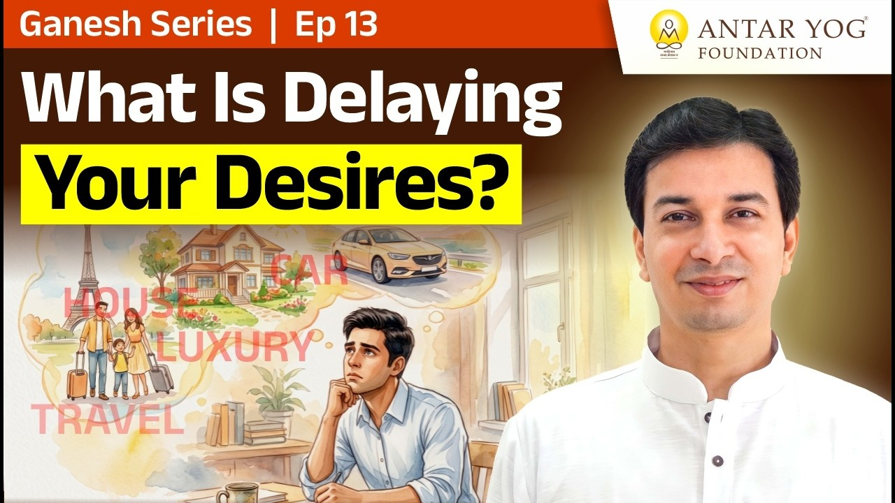

क्या आपके भीतर भी कभी कोई आवाज़ बार-बार कहती है, "तूने गलत किया"? यह आवाज़ हमें सुधारती है, या भीतर ही भीतर बांध देती है?
इस प्रवचन में गुरुजी एक ऐसी बात कहते हैं जो पहली बार सुनने में चौंकाती है, पर गहराई से सोचने पर मुक्त करती है।
भूल हुई, मान ली, बात खत्म
गुरुजी बताते हैं कि भारत में उन्होंने पाप-पुण्य का यह ज्ञान अधिक दिया, विदेश में दिया ही नहीं। इसलिए वहां के लोग पाप करने से डरते नहीं हैं।
उनसे भूल होती है, उसका परिणाम भी आता है। पर जब उन्हें बताया जाता है कि यह गलत था, तो वे सीधे कहते हैं कि अच्छा गुरुजी, अच्छा स्वामीजी, क्या वह पाप था? उन्हें पता ही नहीं था, और अब से वे ऐसा नहीं करेंगे।
और तुरंत उनके संस्कार (मन पर पड़ी छाप, impressions) साफ हो जाते हैं। कारण सरल है: उनके भीतर अनावश्यक डर डाला ही नहीं गया।
"बाप्पा देख रहा है"
हमारे यहां कहानी बचपन से अलग शुरू होती है। "ये बाप्पा हैं, बाप्पा तुझे देख रहे हैं, ऊपर से सब देखते हैं, संभलकर रह।"
बच्चा अभी ठीक से यह भी नहीं कह पाता कि "पानी पियूं या खाऊं", और उसके मन में पाप-पुण्य बैठा दिया जाता है।
परिणाम? मनुष्य भीतर से पूरी तरह शुद्ध तो होता नहीं, पाप फिर भी करता है। बस उसके दिल में एक कैसेट चलती रहती है: "तूने गलत किया, तुझे नहीं करना चाहिए था।"
क्या आपके भीतर भी ऐसी कोई कैसेट बरसों से चल रही है?
हृदय ग्रंथि: भीतर की गांठ
यहीं बनती है हृदय ग्रंथि (heart knot)। सत्त्व मनुष्य को ऊपर उठाना चाहता है, और रज-तम (राजसिक और तामसिक प्रवृत्तियां) उसे नीचे खींचते हैं।
इस खींचतान में हृदय में गांठ पड़ जाती है, और मनुष्य मुक्त नहीं हो पाता।
पाप का अधिकार, सुधार का कर्तव्य
अब वह बात जो चौंकाती है। गुरुजी शास्त्र की ओर से कहते हैं कि आपको पाप करने का पूरा अधिकार है, बशर्ते आप यह मानें कि उससे आपको और दूसरों को हानि पहुंचने से पहले उससे बाहर निकलना आपका कर्तव्य है।
भूल हर किसी से हो सकती है। पर फिर आपका कर्तव्य है कि उसके भयानक परिणाम आने से पहले स्वयं को और दूसरों को बचाएं।
भूल हुई, तुरंत समझ आई, परिणाम से पहले सुधार ली, तो ठीक है। बस वही भूल दोबारा नहीं दोहरानी है। गुरुजी कहते हैं कि यह काम विदेशी लोग जल्दी कर लेते हैं, और हमारे यहां समस्या गलत शिक्षाओं से आई है।
या तो पूरा अर्थ सिखाओ, या डर मत सिखाओ
गुरुजी का समाधान स्पष्ट है। बच्चे को बचपन से ही पूरा सिखाओ:
- गणपति का अर्थ क्या है? उनके चारों हाथों का अर्थ क्या है?
- थाली घुमाकर आरती करने का अर्थ क्या है?
- थाली में रखे चांदी, सोने, सुपारी और दीये का अर्थ क्या है?
अगर यह अर्थ नहीं सिखाते, तो पाप-पुण्य का डर भी मत सिखाओ, वरना जीवन बिगाड़ दोगे।
वे यह बात उपनिषद के आधार पर कहते हैं और मानते हैं कि पहली बार यह गलत लगेगी, पर यही असलियत है। अंतर में हर बात संदर्भ के साथ सिखाई जाती है, हवा में नहीं।
ज्ञान नहीं, परिणाम
गुरुजी कहते हैं कि महत्व ज्ञान का नहीं है, महत्व इसका है कि आपको उसका परिणाम मिलता है या नहीं।
गुरुजी बताते हैं कि शिविर खत्म होने से पहले हर किसी को कोई न कोई शुभ समाचार मिलता है, अटके काम सुलझ जाते हैं। श्री विद्या में व्यवसाय और आय में बदलाव, स्वास्थ्य के शिविर में रोगों से मुक्ति।
एक के साथ हुआ तो संयोग, दो के साथ भी संयोग। पर जितने बैठे हैं, सबके साथ हो, तो वह संयोग नहीं हो सकता।
फिर भी वे स्पष्ट कहते हैं कि वे चमत्कार का दावा नहीं करते। वे सोचने पर विवश करते हैं। जैसा आप सोचते हैं, वैसा कर्म बनता है, और वही कर्म चमत्कार करवाता है। वहां चंदन चढ़ाने से यहां नौकरी नहीं लगती।
पूजा-पाठ: पहला कदम, अंतिम नहीं
दो साल के बच्चे को सिखाया जाता है, "बाप्पा बोल, नमस्कार कर।" और अट्ठानवे साल तक मनुष्य वही करता रहता है। सामान्य मनुष्य का पूरा जीवन इसी में बीत जाता है।
गुरुजी कहते हैं कि पूजा-पाठ अंत नहीं है, वह तो आरंभ है।
आपकी साधना आज भी पहले कदम पर रुकी है, या आगे बढ़ रही है?
मुख्य बातें
- अनावश्यक पाप-भय हृदय ग्रंथि बनाता है, जो मुक्ति में बाधा है।
- भूल होना स्वाभाविक है; परिणाम से पहले सुधारना और दोहराना नहीं, यही कर्तव्य है।
- बच्चों को पूजा के प्रतीकों का अर्थ सिखाएं, केवल डर नहीं।
- ज्ञान की कसौटी उसका परिणाम है।
- चमत्कार आपके विचार और कर्म से होता है, बाहरी कर्मकांड से नहीं।
- पूजा-पाठ आरंभ है, अंत नहीं।
